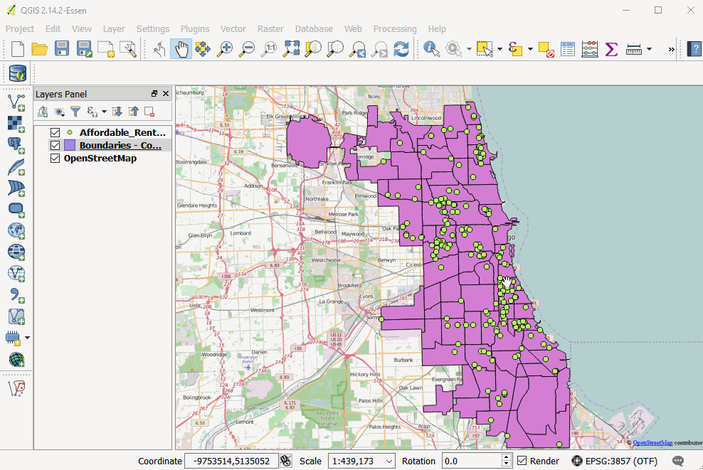
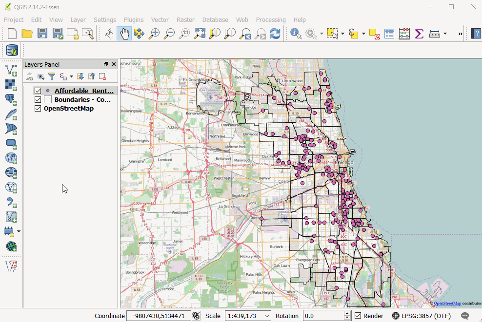
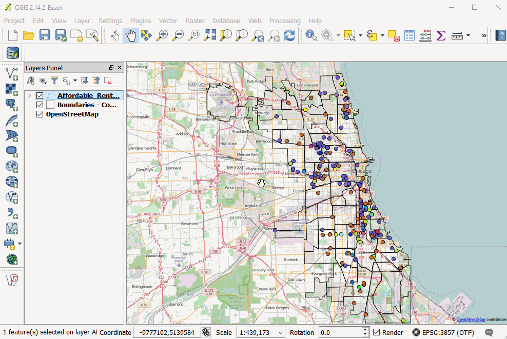
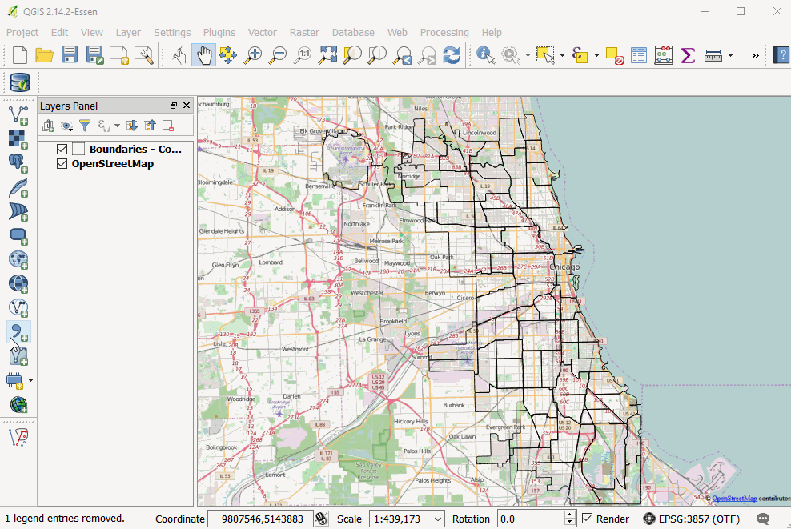
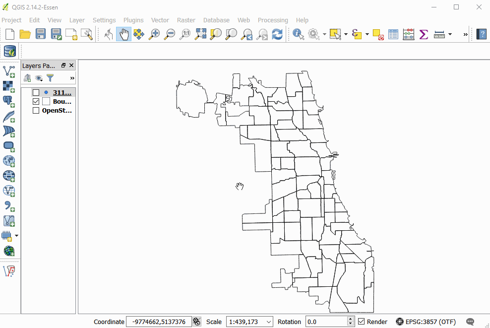

Styling Your Layers
Styling layers
Right-click on layers and go to "Properties" and select "Style" on the left-hand menu
Default (indicated at the top left) is "Single Symbol" which is one marker/color
From this menu, can change marker styles, colors, sizes, map units, transparency, rotation
Parameters can be overridden based on expressions that can be written. To do so, click the button to the right
The top left drop-down allows for
single symbol (default)
categorized (good for categorical),
graduated (good for numeric data)


Pick a column to classify the data
Can specify a number of classes and a scheme for dividing them, e.g. "equal interval", "quantile", "natural breaks", and can manually edit these
Can look at the values in the histogram by clicking on the "Histogram" tab (which is at the same level as the "Classes" tab)
rule-based (combine other stylizations based on rules that the user sets out),
Default rules will be created starting with other methods
Heat-map (simple to use)
Can play with rendering quality, color ramp, weight of different points

Fancy Time Animation!

Add the "TimeManager" plugin
This adds a new window at the bottom
Under Settings menu can
Add a layer: select a layer, column of interest (and time units if desired)
Select how to play back e.g. time increments, speed of display
Have a button to "export video"
